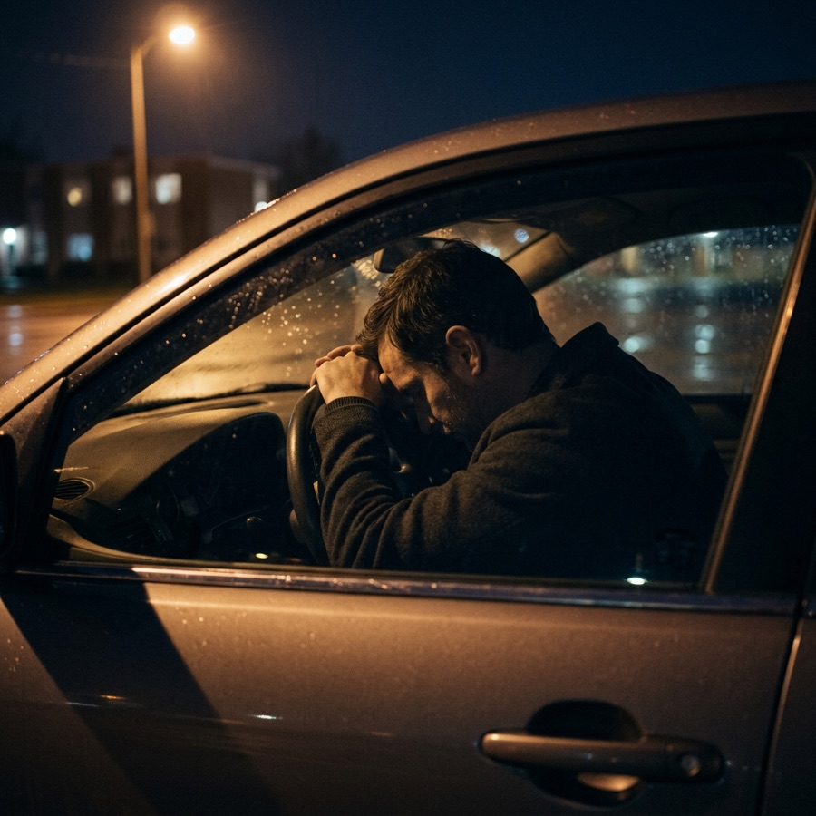

I blew over the limit — isn’t it already decided?
A number is a reading, not a verdict. Breath instruments carry a documented accuracy-check history and blood carries a chain of custody and a lab record — both are discoverable. The fifteen-minute observation, mouth alcohol and a rising curve are each testable before anything is conceded.